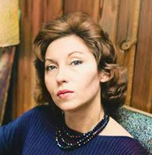

Clarice Lispector foi uma das escritoras mais importantes da literatura brasileira do século XX. Nascida em 10
de dezembro de 1920, em Tchetchelnik, na Ucrânia, chegou ao Brasil ainda criança com sua família. Viveu
principalmente em Recife e no Rio de Janeiro, lugares que tiveram influência em sua formação e em sua trajetória
literária.
Clarice começou a escrever desde muito jovem e publicou seu primeiro romance, Perto do Coração Selvagem, em
1943. A obra chamou a atenção por apresentar uma escrita inovadora, marcada pela introspecção e pela análise dos
pensamentos e sentimentos das personagens. Ao longo de sua carreira, publicou romances, contos, crônicas e
livros infantis.
Uma das principais características de sua literatura é a exploração da vida interior das personagens. Clarice
frequentemente abordava temas como identidade, solidão, liberdade, existência, relações humanas e descobertas
pessoais. Sua escrita apresenta momentos de reflexão profunda e, muitas vezes, utiliza uma linguagem poética e
subjetiva.
Entre suas obras mais conhecidas estão Laços de Família, A Paixão Segundo G.H., Água Viva e A Hora da Estrela.
Nesta última, Clarice conta a história de Macabéa, uma jovem nordestina que vive de maneira simples e enfrenta
dificuldades na cidade do Rio de Janeiro. A obra também apresenta reflexões sobre desigualdade social,
invisibilidade e condição humana.
Clarice Lispector faleceu em 9 de dezembro de 1977, no Rio de Janeiro, mas deixou uma obra que continua sendo
estudada e lida no Brasil e em outros países. Seu estilo singular e sua maneira de investigar os sentimentos e
conflitos humanos fizeram dela uma referência da literatura brasileira.
Assim, Clarice Lispector permanece como uma escritora fundamental para compreender a literatura brasileira
moderna. Suas obras convidam o leitor a refletir sobre questões profundas da existência e sobre aspectos do
cotidiano que muitas vezes passam despercebidos.